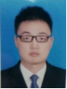
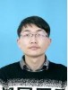

团队成员
刘晖
刘晖，博士四年级，本科毕业于东南大学应用数学专业。当前研究方向为计算机图形学。曾获得CAD/Graphics 2017 大会最佳论文奖。联系邮箱：jacklh78@csu.edu.cn。
叶奋进
叶奋进，研究生二年级，1994年生。本科毕业于中国地质大学（武汉）计算机科学与技术专业，院羽毛球队队长。研究方向为高维数据可视化。在一年级以第二作者身份（导师第一作者）在可视化国际顶级会议IEEE VIS发表论文一篇，并被推荐至可视化顶级期刊IEEE TVCG。联系邮箱：yefenjin@csu.edu.cn。

高乐
高乐，研究生二年级，93年生。本科毕业于湘潭大学，并保研到中南大学。研究方向为高维数据的交互式探索。联系邮箱：csugaole@csu.edu.cn。
张宇鸿
张宇鸿，研究生一年级，1996年生。本科毕业于中南大学，期间以第三作者身份发表SCI论文一篇，曾获全国大学生信息安全竞赛三等奖。研究方向为网络安全可视化。联系邮箱：zhangyuhong@csu.edu.cn。
蒋广
蒋广，研究生一年级，1996年生。本科毕业于中南大学，期间以第二作者身份（导师为第一作者）发表SCI论文一篇，参与发表EI论文一篇。研究方向为数据可视分析。联系邮箱：jiangguang@csu.edu.cn。
王雨思
王雨思，研究生一年级。本科毕业于中南大学，期间以第四作者身份在可视化国际顶级会议IEEE VIS发表论文一篇，并被推荐至可视化顶级期刊IEEE TVCG，申请发明专利一项，曾获得国家励志奖学金，“优秀毕业生”、“优秀学生”、“优秀团员”、“优秀学生干部”等荣誉称号，中南大学运动会100m栏亚军，保送本校研究生。研究方向为可视化与人机交互。现任中南大学信息院研究生会副主席。联系邮箱：yswang@csu.edu.cn。
李彬

侯扬波
侯扬波，研究生一年级，1995年生，本科毕业于安阳工学院信息科学与技术专业，曾获得过全国大学生数学建模竞赛二等奖，国家励志奖学金等奖项。研究方向为数据可视化。联系邮箱：houyangbo@csu.edu.cn。
李强
李强，中南大学本科四年级，曾获全国大学生信息安全竞赛二等奖，美国大学生数学建模二等奖，中国高校计算机团体程序设计天梯赛华中赛区三等奖等学科竞赛奖项，曾获中南大学优秀学生等荣誉称号,申请发明专利三项。现已保研至本组继续攻读硕士学位，研究方向为高维数据可视化，流形学习等。联系邮箱：0902140502@csu.edu.cn。
毕业学生
2017年：
张亚伟（硕士生，中国农业银行（北京），硕士期间获国家奖学金）
王雨思（本科生，保送研究生，于本组继续攻读硕士学位，本科期间参与发表A类SCI论文一篇）
蒋广（本科生，于本组继续攻读硕士学位，本科期间发表SCI论文一篇，参与发表EI论文一篇）
张宇鸿（本科生，于本组继续攻读硕士学位，本科期间参与发表SCI论文一篇）
2016年：
李瑞（本科生，于美国俄亥俄州立大学攻读博士学位，本科期间参与发表论文2篇）
小组成员共8人，包括博士生1名，硕士生7名。另有图灵班2014级1名、2015级3名本科生在小组进行科研训练。其中2014级本科生李强已保送研究生并于本组攻读硕士学位。
欢迎中南大学在校优秀本科生与各地具有强烈上进心的本科毕业生加入课题组，我们将一对一制定培养计划。
Emai: xiajiazhi@csu.edu.cn